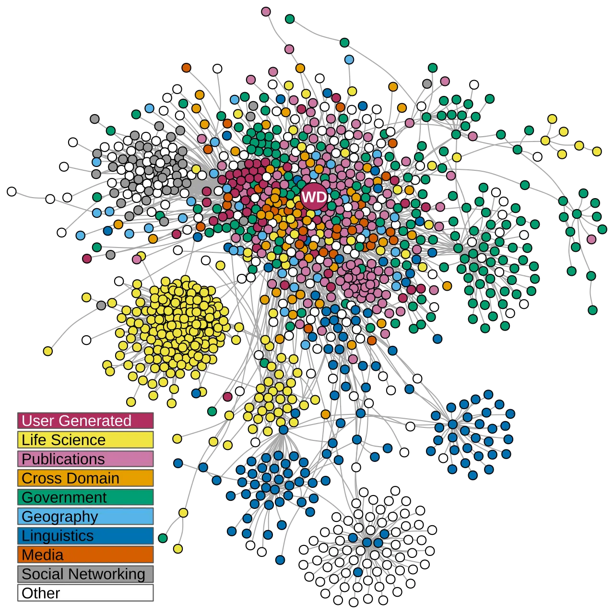

Short answer
Linked data is a way to connect things with identifiers. JSON-LD is one syntax a page can use to write some of those connections down.
The figure is a dense drawing of many circles in clusters, joined by lines. It is a picture of a large public graph, not a map of Mika and not a graph this article claims to have measured. On a product page, the useful form is smaller: a JSON-LD block whose name, description, and identifier match the visible text. A line in a global drawing does not create that match.
Definition
An identifier that points at a thing the page never names is a decoration. An identifier that repeats the product family, the manufacturer, and the document URL can help a parser see what the prose already says. GEO still depends on the sentences being understandable. Markup is a technical SEO Health topic. It does not become a citation, and the cluster picture does not assign this site a place in that cloud.
What the markup can and cannot do
Write JSON-LD that repeats visible facts, and keep identifiers you can explain in the prose.
One syntax is enough. Do not add a second block that names a different product. Do not paste a graph of unrelated identifiers because a diagram elsewhere is densely linked. Read the JSON-LD beside the H1. If a person cannot see the connection, the parser’s connection is not evidence. The circle drawing stays a picture of other people’s data.

What to check
- JSON-LD names that match the H1
- Identifiers the prose actually explains
- One syntax, without a conflicting second block
- The canonical URL used as the document’s URL
- One product page read as HTML and as JSON-LD
A practical example
A valve page’s JSON-LD uses an identifier for a different industry and a name that does not appear on the page. The repair deletes the block and writes one object whose name is the H1 and whose URL is the canonical. No circle is added from the figure. The prose still has to explain the valve.
What this does not claim
JSON-LD does not guarantee rankings, rich results, or citations.
Where Mika Visibility files this
Mika Visibility treats structured data as a technical SEO Health topic: the markup should match visible facts and parse cleanly. It does not sell rich-result placement. GEO still cares that entities and evidence are understandable in the prose. Markup that repeats a slogan does not create evidence.
The circle drawing is a picture of a large public graph. It is not this site’s inventory.
FAQ
What is linked data on a page?
Linked data is a way to connect things with identifiers. JSON-LD is one syntax a page can use to write some of those connections down.
What should JSON-LD repeat?
Write JSON-LD that repeats visible facts, and keep identifiers you can explain in the prose.
Does JSON-LD guarantee citations?
JSON-LD does not guarantee rankings, rich results, or citations.
Next step
Run a structured SEO + GEO audit to see health findings, growth gaps, and a blueprint you can act on.
Clearer entities, answers, evidence, and context make pages easier to understand and reference. Results in any answer product are not guaranteed.